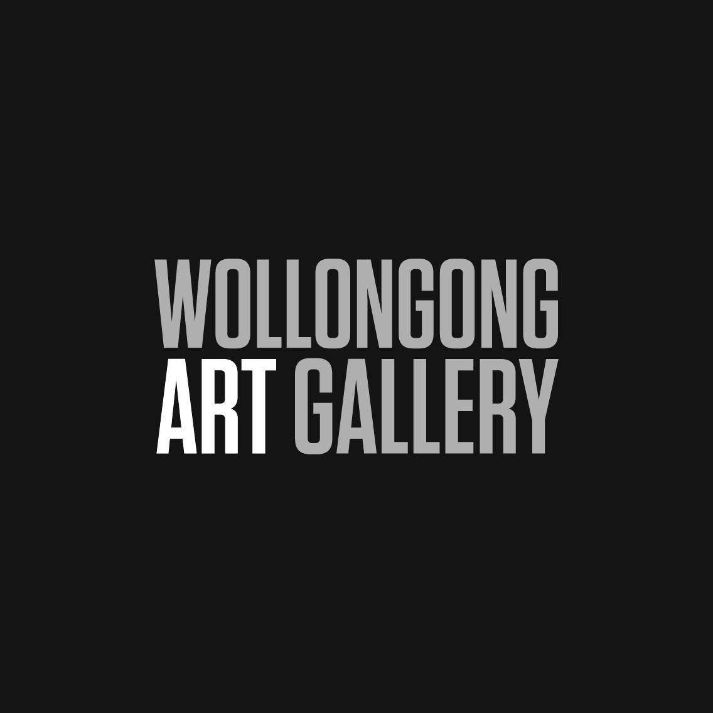

| Events | Dates | Description | additional info |
|---|---|---|---|
| Nan Tien Health & Wellbeing Market | August 5, 2023 | This is the market to visit if you are looking for a relaxed browsing/shopping experience! |
|
| Viva Mexico Tour — Journey Through Mexico’s Musical Landscape | August 12, 2023 | “Trumpets, violins, romantic melodies, the works!” says Victor Valdes when talking about his show. “I will take you on a journey through Mexico, a party night to remember!” |
|
| Pevan & Sarah in Concert | November 21, 2023 | Pevan & Sarah are on the road again bringing the joy of their music to delight audiences in theatres across the country |
|
| Lyre Byrdland - Afro-Funk 10 Piece Orchestra | September 9, 2023 | The Sydney based, 10-piece instrumental groove machine know as Lyre Byrdland has established itself as a powerhouse of party music since its inception in 2014. |
|
| Family Fun Day | August 20, 2023 | Bring the whole family in for a bite to eat and a couple drinks, with live music, outdoor games, table tennis, pool tables and a kids painting station from 12-4pm, don't miss out! |
|
Symbio wildlife park |
CONTACT Tel: (02) 4294 1244 info@symbiozoo.com.au |
PRICE Adult-$42.00, Children-$27.00 😀 |
The Australian MOTORLIFE Museum |
CONTACT Tel: (02) 42 614 100 admin@motorlifemuseum.com |
PRICE Adult-$20, Children-$5 😅 |
Jamberoo Action Park |
CONTACT Tel: (02) 4236 0114 admin@jamberoo.net |
PRICE Adult-$69, Children-$59 😄 |
Wollongong Art Gallery  |
CONTACT Tel: 02 4227 8500 |
PRICE FREE 😉 |
Kneading Ruby |
CONTACT Tel: (02) 4229 7829 |
PRICE $5-$100 😏 |
opening hours - Monday 9 am–4:30 pm Tuesday 9 am–4:30 pm Wednesday 9 am–4:30 pm Thursday 9 am–4:30 pm Friday 9 am–4:30 pm Saturday 10 am–3 pm Sunday 10 am–3 pm